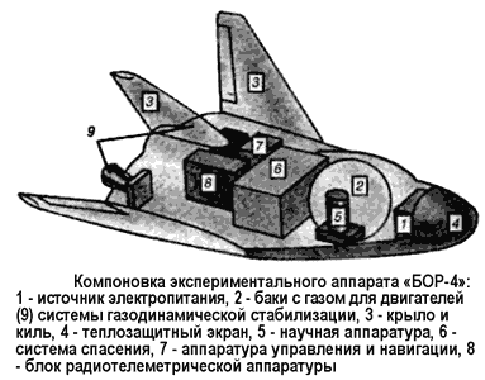
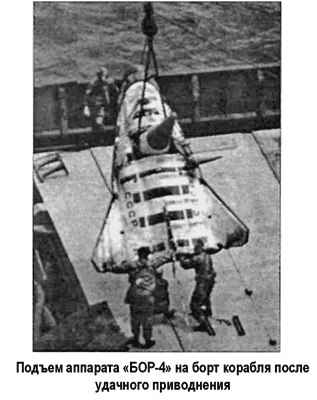

Испытания воздушно-космических моделей «БОР»
Помимо испытаний дозвукового аналога «105.11», в рамках программы создания космического корабля «Буран» были использованы готовые аппараты «БОР».
Беспилотные орбитальные ракетопланы («БОР») создавались с целью уточнения результатов аэродинамических исследований, характеристик устойчивости и управляемости орбитального самолета ВКС «Спираль» на различных участках полета и изучения свойств новых материалов теплозащиты.
Они представляли собой модели орбитального самолета, выполненные в масштабах 1:3 и 1:2.
Так, «БОР-1» был изготовлен в масштабе 1:3 (длина — 3 метра) целиком из дерева и его масса составляла 800 килограммов. «БОР-1» был запущен ракетой-носителем «Космос-2» («11Кб5») 15 июля 1969 года на высоту 100 километров и, естественно, сгорел при входе в атмосферу.
Но еще до начала горения, на высоте 70 километров, радиотелеметрия донесла до Земли множество ценной информации. На основании итогов этого запуска был сделан вывод, что выбранная форма корпуса обеспечивает устойчивый управляемый спуск.
«БОР-2» и «БОР-3», изготовленные в масштабе 1:3 и 1:2 соответственно, были выполнены уже из металла и имели программное управление. Эти аппараты запускались в космос по баллистической траектории из Капустина Яра в сторону полигона в Сары-Шагане (Казахстан) тем же носителем «Космос-2».
Существенно доработанный «БОР-4» служил для отработки новой системы теплозащиты, близкой по характеристикам к теплозащите «Бурана».

Он представлял собой беспилотный экспериментальный аппарат, являющийся уменьшенной копией (1:3) пилотируемого воздушно-космического самолета системы «Спираль», и был выполнен по аэродинамической схеме «несущий корпус». Габариты модели «БОР-4» были следующие: длина — 2,86 метра, размах крыла — 2,6 метра, стартовая масса —
1074 килограмма, масса после возвращения — 795 килограммов. Аппарат со скошенным вверх крылом был оснащен двигателями газовой стабилизации, блоками автономного управления, термозащитным экраном и сбрасываемой тормозной двигательной установкой, осуществляющей сход с орбиты.
Телеметрическая система, которой был оснащен «БОР-4», записывала информацию в бортовое запоминающее устройство и передавала в пакетном режиме при пролете над двумя кораблями космического слежения, а при спуске — на наземный приемный пункт. Измерения шли от 150 термопар, установленных на дюралевой обшивке под теплозащитными плитками, а также под внешним покрытием плиток на глубине 0,3 миллиметра. Телеметрировались показания акселерометров, индикаторов угловых скоростей, положение консолей крыла и информация нескольких десятков других датчиков температуры и давления; использовались также термокраски и индикаторы плавления.
Аппараты «БОР-4» создавались в Летно-исследовательском институте (ЛИИ) имени Громова; изготовление и сборка производились на Тушинском машиностроительном заводе. 5 декабря 1980 года состоялся суборбитальный запуск первого экземпляра аппарата «БОР-4» с абляционной теплозащитой, целью запуска было проверить работоспособность всего экспериментального комплекса. 4 июня 1982 года «БОР-4» был запущен на ракете-носителе «К-65М-РБ5» (вариант легкой двухступенчатой РН «Космос-ЗМ») с полигона Капустин Яр и выполнил один виток на высоте около 225 километров. Над Шри-Ланкой «БОР-4» со скоростью 7500 км/ч ворвался в атмосферу. Потом, погасив скорость, спланировал и приводнился на парашюте в 560 километрах южнее архипелага Кокосовых островов.

Там его подобрал один из семи дежуривших в зоне кораблей Военно-Морского Флота СССР.
В период с 1982 по 1984 год было произведено шесть суборбитальных и орбитальных запусков аппаратов «БОР-4».
Аппараты, выводившиеся на орбиты ИСЗ, получали наименования спутников серии «Космос» («Космос-1374», «Космос1445», «Космос-1517» и «Космос-1614»).
В результате проведенных исследований была окончательно решена проблема теплозащиты орбитального самолета, в том числе получены значения температур на наиболее теплонапряженных элементах конструкции: носовом обтекателе и прилегающем к нему участке нижней поверхности фюзеляжа в условиях реальных физико-химических процессов и каталитичности поверхности на высотах от 100 до 30 километров при скоростях от 25 до 3 Махов.
После двух запусков и отработки бортовой системы управления район приводнения в Индийском океане был заменен на район Черного моря. Дело в том, что каждый раз приходилось преодолевать противодействие иностранных судов, пытавшихся опередить советские корабли и поднять на борт приводнившиеся аппараты. Но и со сменой места посадки проблем не убавилось. Трасса атмосферного участка спуска «БОР-4» при приводнении в советских территориальных водах Черного моря проходила на высотах от 60 до 80 километров над территориями Великобритании и Германии, что юридически являлось нарушением их воздушного пространства.
Поэтому каждый полет аппаратов «БОР-4» заканчивался вручением соответствующей дипломатической ноты.